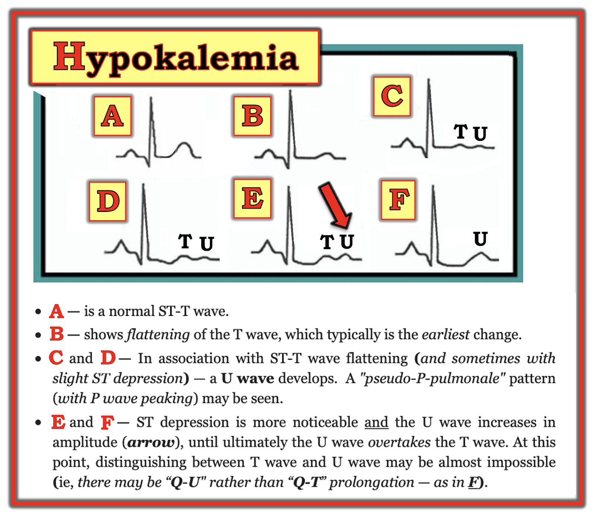

ECG Blog #289 — Nhiễu hay sóng khổng lồ?
Điện tâm đồ ở Hình-1 được ghi từ một phụ nữ khoảng giữa tuổi 30, trước đây khỏe mạnh — đến khoa cấp cứu — ED (Emergency Department) — vì hồi hộp đánh trống ngực (palpitations). Bệnh nhân ổn định huyết động.
CÂU HỎI:
- BẠN sẽ đọc điện tâm đồ ở Hình-1 như thế nào?
SUY NGHĨ CỦA TÔI về điện tâm đồ #1:
Như mọi khi — tôi tiếp cận điện tâm đồ ở Hình-1 một cách hệ thống (Xem ECG Blog #205 về Cách tiếp cận hệ thống của tôi với điện tâm đồ 12 chuyển đạo). Tôi đọc như sau:
- Phức bộ QRS hẹp — nên nhịp là trên thất.
- Nhịp nhanh (tức ~135-140/phút) và đều.
- Sóng P có vẻ hiện diện! Các sóng P này trông kỳ dị ở chuyển đạo II (và ở các chuyển đạo dưới khác) — do đoạn ST và sóng T hết sức bất thường (Xem bên dưới). Nhưng sóng P âm rõ ràng, với khoảng PR tương tự, thấy rõ ở chuyển đạo V1 và V2 khẳng định có sóng P xoang! Vậy nhịp là nhịp nhanh xoang rất nhanh, tần số ~135-140/phút.
Tiếp tục với Cách tiếp cận hệ thống của tôi:
Sau khi đánh giá Tần số và Nhịp — tôi thích xem tiếp các Khoảng (PR/QRS/QTc):
- Khoảng PR của nhịp nhanh ở Hình-1 có vẻ bình thường (tức khoảng PR thường ngắn lại một chút khi nhịp nhanh).
- Như đã nêu — phức bộ QRS hẹp.
- Tuy nhiên, khoảng thứ 3 ( = khoảng QTc = khoảng QT hiệu chỉnh theo tần số tim) — kéo dài rõ rệt. Việc đánh giá QTc càng lúc càng khó khi tần số tim càng nhanh (đặc biệt ở tần số vượt xa 100/phút). Dù vậy, khoảng QT của điện tâm đồ #1 ở Hình-1 chiếm ít nhất 3/4 khoảng R-R! — nên dù tần số tim nhanh, QTc rõ ràng kéo dài rõ rệt.
- Trục mặt phẳng trán ở Hình-1 bình thường (khoảng +70 độ).
- Lớn các buồng tim – Không có.
==================================
ĐIỂM THEN CHỐT (PEARL) #1: Ngay cả trước khi hoàn tất đánh giá hệ thống điện tâm đồ ở Hình-1 — tôi nghĩ đáng để giới thiệu DANH SÁCH ngắn các Nguyên nhân gây QTc kéo dài (QTc prolongation) cần được cân nhắc thường quy bất cứ khi nào bạn gặp QTc kéo dài. Danh sách này càng đặc biệt phù hợp khi QTc tăng mạnh như ở điện tâm đồ #1. Giả sử không có blốc nhánh, thiếu máu cục bộ hoặc nhồi máu (vì các bệnh lý này có thể làm QT kéo dài) — HÃY NGHĨ TỚI 3 nhóm Nguyên nhân chính:
- i) THUỐC — DRUGS (nhiều thuốc làm kéo dài khoảng QT — và phối hợp nhiều thuốc có thể gây kéo dài rõ rệt).
- ii) ĐIỆN GIẢI — LYTES (tức Nghĩ tới K+ thấp và/hoặc Mg++ thấp và/hoặc Ca++ thấp)
- — và/hoặc —
- iii) một Biến cố thảm họa thần kinh trung ương — CNS Catastrophe (tức đột quỵ, xuất huyết, hôn mê, co giật, chấn thương, u não).
- LƯU Ý: Vì bệnh nhân trong ca hôm nay là một phụ nữ trẻ trước đây khỏe mạnh, đủ tỉnh táo để than phiền "hồi hộp đánh trống ngực" — nên biến cố thảm họa thần kinh trung ương có vẻ khó xảy ra. Ta cũng có thể suy ra rằng người phụ nữ trẻ vốn khỏe mạnh này có lẽ không dùng đủ thuốc (tức "Thuốc") để gây QTc kéo dài rõ rệt. Vì vậy, ngay cả trước khi hoàn tất đánh giá hệ thống — nhận ra QTc kéo dài rõ rệt phải ngay lập tức khiến ta nghĩ tới rối loạn điện giải (tức "Điện giải") như một nguyên nhân nền rất có thể.
==================================
Về Thay đổi Q-R-S-T của điện tâm đồ ở Hình-1:
- Sóng Q: Có một sóng Q rất nhỏ (phức bộ QS) ở chuyển đạo aVL.
- Tăng tiến sóng R: Bình thường — với vùng chuyển tiếp (tức điểm mà sóng R cao hơn độ sâu của sóng S) xảy ra bình thường giữa chuyển đạo V3-đến-V4.
- Thay đổi ST-T: Kỳ dị! Đoạn ST dẹt một cách bất ngờ ở nhiều chuyển đạo (tức II,III,aVF; và ở V4,V5,V6). Như tôi đã nêu — dù nhịp nhanh, QTc vẫn kéo dài rõ rệt.
- LƯU Ý: Để rõ ràng, tôi đã đánh dấu trên Hình-2 — một số sóng P chọn lọc (ở chuyển đạo II,V1,V2,V4) — và thêm nhãn để phân biệt giữa các đoạn ST chênh xuống, dẹt với sóng T (và/hoặc U) kế cận ở chuyển đạo II và V4.
THÚ NHẬN: Ban đầu tôi nghĩ các sóng ST-T trông kỳ dị ở Hình-1 là do nhiễu (artifact). Nhưng như minh họa ở Hình-2 — giờ tôi tin chắc các biến dạng sóng này là thật, và điện tâm đồ này đơn giản là nhịp nhanh xoang với đoạn ST dẹt và chênh xuống lan tỏa + khoảng QT (hay Q-U) kéo dài rõ rệt.
- KẾT QUẢ XÉT NGHIỆM: "Đáp án lâm sàng" giải thích hình dạng kỳ dị của điện tâm đồ này trở nên rõ ràng khi có kết quả xét nghiệm ban đầu. K+ huyết thanh giảm rõ rệt = 2.6 mEq/L (Mg++ huyết thanh cũng giảm tương tự).
==================================
Các dấu hiệu điện tâm đồ của hạ kali máu là gì?
Theo kinh nghiệm của tôi — điện tâm đồ không phải là công cụ quá đáng tin cậy để đánh giá hạ kali máu (hypokalemia) nhẹ-đến-vừa, vì cả độ nhạy và độ đặc hiệu của các dấu hiệu điện tâm đồ đối với hạ kali máu chưa-đến-mức-nặng đều tương đối thấp. Dù vậy — những thay đổi cần tìm được minh họa theo trình tự ở Hình 3.


Với nội dung ở Hình-3 — tôi xin bổ sung các điểm sau:
- Không phải bệnh nhân nào cũng đọc sách giáo khoa. Tôi đã gặp nhiều bệnh nhân có đủ mọi dấu hiệu điện tâm đồ ở Hình-3 mà K+ huyết thanh bình thường. Tôi cũng đã gặp bệnh nhân hạ kali máu nhẹ-đến-vừa mà không biểu hiện bất kỳ dấu hiệu nào ở Hình-3. Vì vậy, theo kinh nghiệm của tôi — điện tâm đồ là công cụ có độ nhạy hay độ đặc hiệu chưa tối ưu để phát hiện hạ kali máu nhẹ-đến-vừa. Dù vậy — với hạ kali máu ở mức độ nặng hơn, điện tâm đồ dự đoán tốt hơn nhiều, và điện tâm đồ rất khó còn "bình thường".
- ĐIỂM THEN CHỐT (PEARL) #2 — Dấu hiệu sóng U không đặc hiệu cho hạ kali máu! Sóng U cũng có thể gặp ở bệnh nhân LVH và/hoặc nhịp chậm, và đôi khi là một biến thể bình thường. Dù vậy — khi có sóng U, và bệnh sử phù hợp với (hoặc gợi ý) hạ kali máu (như ở bệnh nhân nôn, yếu cơ, có tiền sử lạm dụng rượu — hoặc người đang dùng thuốc lợi tiểu) — thì đánh giá ngay điện giải huyết thanh trở nên thiết yếu!
- ĐIỂM THEN CHỐT (PEARL) #3 — NẾU sóng U lớn đến mức lớn hơn (hoặc gần bằng) sóng T — thì điện tâm đồ trở nên đáng tin cậy hơn nhiều trong dự đoán hạ kali máu đáng kể (Ô E và F ở Hình-3).
- ĐIỂM THEN CHỐT (PEARL) #4 — Theo kinh nghiệm của tôi — hạ magnesi máu (hypomagnesemia) gây ra các thay đổi điện tâm đồ gần như giống hệt hạ kali máu. Điều này quan trọng — vì nồng độ Mg++ huyết thanh không nhất thiết có trong bộ xét nghiệm sinh hóa trừ khi được chỉ định cụ thể. Magnesi cơ thể thấp thường gặp đi kèm với bất thường điện giải khác (tức natri, kali, canxi hoặc phospho thấp); nhồi máu cơ tim cấp; ngừng tim; dùng digoxin/lợi tiểu; sử dụng và lạm dụng rượu; suy giảm chức năng thận.
==================================
Các dấu hiệu điện tâm đồ của Hạ Canxi máu là gì?
Hạ canxi máu (hypocalcemia) thường làm kéo dài khoảng QT. Vì vậy đây là một trong các bệnh lý trong DANH SÁCH ngắn của chúng ta, cần nghĩ ngay tới bất cứ khi nào bạn nhận ra QT kéo dài.
- ĐIỂM THEN CHỐT (PEARL) #5: Về lý thuyết — hạ canxi máu đơn thuần không ảnh hưởng tới sóng T! Do đó — hình ảnh điện tâm đồ đặc trưng của hạ canxi máu là đoạn ST dẹt và kéo dài, cuối đoạn là một sóng T trông bình thường đến bất ngờ.
- LƯU Ý: Hình ảnh đặc trưng này của hạ canxi máu tất nhiên có thể thay đổi NẾU bệnh nhân đồng thời có tăng hoặc hạ kali máu (như ở ca hôm nay — trong đó hạ kali máu đi kèm có thể giải thích các sóng T/U lớn ở cuối các đoạn ST dẹt kéo dài).
- Tiếc là tôi không biết nồng độ Ca++ huyết thanh trong ca hôm nay. Tuy nhiên — việc đoạn ST dẹt đến vậy ở nhiều chuyển đạo trên điện tâm đồ #1 khiến tôi tự hỏi LIỆU ngoài hạ kali máu và hạ magnesi máu — bệnh nhân có cả hạ canxi máu hay không.
==================================
- BẤM VÀO ĐÂY — để tải PDF Phần 11 (từ cuốn ECG-2014-ePub của tôi) về Chẩn đoán bằng điện tâm đồ các Rối loạn điện giải.
==================================
Ca bệnh hôm nay tiếp diễn:
Bệnh nhân trong ca hôm nay được điều trị bù điện giải. Hình-4 cho thấy điện tâm đồ #2 theo dõi — được ghi sau khi đã bù K+ một phần, lúc đó K+ huyết thanh = 3.5 mEq/L (so với giá trị K+ huyết thanh ban đầu = 2.6 mEq/L, lúc ghi điện tâm đồ #1).
CÂU HỎI về Hình-4:
- Có còn dấu hiệu điện tâm đồ gợi ý hạ kali máu ở điện tâm đồ #2 không?
- Điện tâm đồ #2 so với điện tâm đồ #1 thế nào?
TRẢ LỜI (mà tôi đã đánh dấu trên Hình-5):
Lưu ý tần số tim đã chậm lại rõ rệt ở điện tâm đồ #2.
- BẠN có để ý rằng ta không thấy rõ sóng P dương ở chuyển đạo II của điện tâm đồ #2? Có vẻ có một sóng P dương nhỏ với khoảng PR ngắn ở chuyển đạo I và aVL của điện tâm đồ #2 — và một sóng P âm nhỏ với khoảng PR ngắn ở chuyển đạo III. Vì vậy, nhịp ở điện tâm đồ #2 không phải nhịp xoang. Thay vào đó — có vẻ là nhịp nhĩ thấp (low atrial rhythm).
- Trong số các dấu hiệu hạ kali máu mô tả ở Hình-3, những dấu hiệu còn tồn tại ở điện tâm đồ #2 là: i) Đoạn ST dẹt không đặc hiệu ở nhiều chuyển đạo; và, ii) Sóng U vẫn còn (rõ nhất ở các chuyển đạo mà tôi đã đánh dấu trên Hình-5).
- Lưu ý rằng khi K+ huyết thanh tăng lên — việc xác định giới hạn của các sóng U mà tôi đã đánh dấu trở nên dễ hơn.
- Cũng lưu ý rằng khoảng Q-U vẫn kéo dài — và biên độ sóng U đều vượt quá chiều cao của các sóng T ngay trước chúng. Dù vậy — đoạn ST ở nhiều chuyển đạo rõ ràng không còn thẳng và chênh xuống như ở điện tâm đồ #1 — và các sóng U khổng lồ thấy ở điện tâm đồ #1 đã nhỏ đi đáng kể ở điện tâm đồ #2.
- ĐIỂM THEN CHỐT (PEARL) #6: Mặc dù các điện tâm đồ liên tiếp nhìn chung sẽ cho thấy nhiều dấu hiệu hạ kali máu thoái lui khi thiếu hụt điện giải được điều chỉnh — không có mối liên hệ tuyến tính giữa nồng độ K+ huyết thanh và hình ảnh điện tâm đồ. Cũng có thể có một "độ trễ" thời gian trước khi thấy các thay đổi điện tâm đồ cải thiện. Dù vậy — tôi thấy đáng mừng là nhìn chung các thay đổi điện tâm đồ của hạ kali máu ở điện tâm đồ #2 đã bớt rõ rệt.
Điện tâm đồ "nền" (baseline):
Xem lại hồ sơ bệnh án của bệnh nhân thấy có một điện tâm đồ "nền" ghi 2 năm trước điện tâm đồ #1 (Xem Hình-6).
CÂU HỎI:
- Bạn có nghĩ nồng độ K+ huyết thanh bình thường vào thời điểm ghi điện tâm đồ "nền" ở Hình-6 không?
TRẢ LỜI:
Một trong những vấn đề tôi gặp khi tìm thấy điện tâm đồ "nền" — là không tìm hiểu thông tin về tình trạng lâm sàng của bệnh nhân vào thời điểm ghi bản ghi "nền" đó.
- NẾU điện tâm đồ "nền" của bệnh nhân được ghi lúc họ đang bệnh cấp tính — thì so sánh điện tâm đồ cũ này với điện tâm đồ hiện tại không nhất thiết cho ta biết các thay đổi điện tâm đồ có mới hay không (vì bệnh nhân có thể đang bị tái phát vấn đề tim mạch vào thời điểm ghi bản ghi trước đó).
- Tôi ngờ rằng điện tâm đồ trước đó ở Hình-6 không thực sự là bản ghi "nền" — vì khi đó đã có một số dấu hiệu điện tâm đồ rất gợi ý hạ kali máu. Các dấu hiệu này gồm (như trên Hình-7): i) Sóng ST-T dẹt không đặc hiệu ở mỗi chuyển đạo chi; và, ii) Sóng U nổi bật ở các chuyển đạo tôi đã đánh dấu (với biên độ sóng U vượt quá biên độ sóng T ở chuyển đạo V4 và V5).
- ĐIỂM THEN CHỐT (PEARL) #7 — Tôi thấy rất bổ ích (khi có thể) khi theo dõi bệnh nhân có rối loạn điện giải nặng bằng các điện tâm đồ liên tiếp. Làm vậy cho phép bạn theo dõi diễn tiến của thay đổi sóng ST-T và thay đổi sóng U khi điện giải huyết thanh được điều chỉnh. Giống như với tăng kali máu — Bạn KHÔNG hề biết điện tâm đồ "nền" thực sự của bệnh nhân trông ra sao cho đến khi bạn ghi lại điện tâm đồ sau khi đã điều chỉnh điện giải huyết thanh.
- ĐIỂM THEN CHỐT (PEARL) #8: Theo kinh nghiệm của tôi — hình ảnh điện tâm đồ của hạ kali máu có nhiều dạng. Phần lớn thời gian — các dạng khác nhau này rốt cuộc đều là một biến thể nào đó của sóng U.
- T.B. (P.S.) — Một lần nữa, nhịp ở Hình-7 không phải nhịp xoang, vì không có sóng P dương rõ ở chuyển đạo II. Thay vào đó — sóng P biên độ nhỏ với khoảng PR ngắn ở chuyển đạo I — cùng với sóng P hơi âm ở mỗi chuyển đạo dưới một lần nữa gợi ý nhịp nhĩ thấp.
=======================
Lời cảm ơn: Xin cảm ơn Melvin Lee và Klanseng Ng (từ Kluang, Malaysia) đã chia sẻ ca bệnh và bản ghi này.
=======================
Tài liệu bổ sung liên quan đến ca hôm nay:
- Xem ECG Blog #205 — Ôn lại Cách tiếp cận hệ thống của tôi trong đọc điện tâm đồ 12 chuyển đạo.
- ECG Blog #152 — Ôn tập qua một ca về Đánh giá khoảng QTc.
- ECG Blog #27 — Ôn tập một ca hạ kali máu.
- Bài ngày 9 tháng 5 năm 2020 trên Dr. Smith's ECG Blog (Vui lòng xem Bình luận của tôi ở cuối trang) — Ôn tập về "Nhiều gương mặt" của hạ kali máu.
- Bài ngày 19 tháng 3 năm 2019 trên Dr. Smith's ECG Blog (Vui lòng xem Bình luận của tôi ở cuối trang) — Ôn tập một phương pháp tiện lợi để Ước tính nhanh khoảng QTc và bàn luận một ca có QTc kéo dài do hạ canxi máu.
- Bài ngày 3 tháng 5 năm 2020 trên Dr. Smith's ECG Blog (Vui lòng xem Bình luận của tôi ở cuối trang) — Ôn tập một ca có QTc dài và bất thường sóng ST-T nặng nề do hạ kali máu.